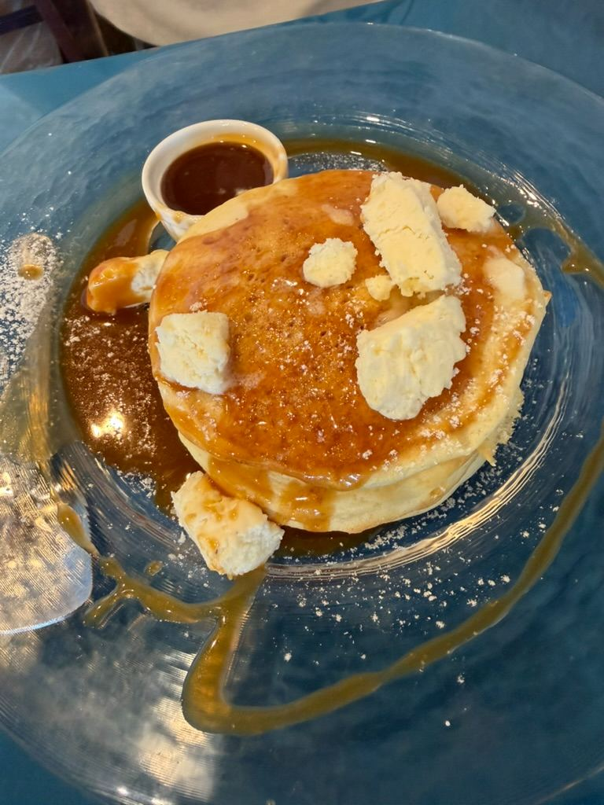
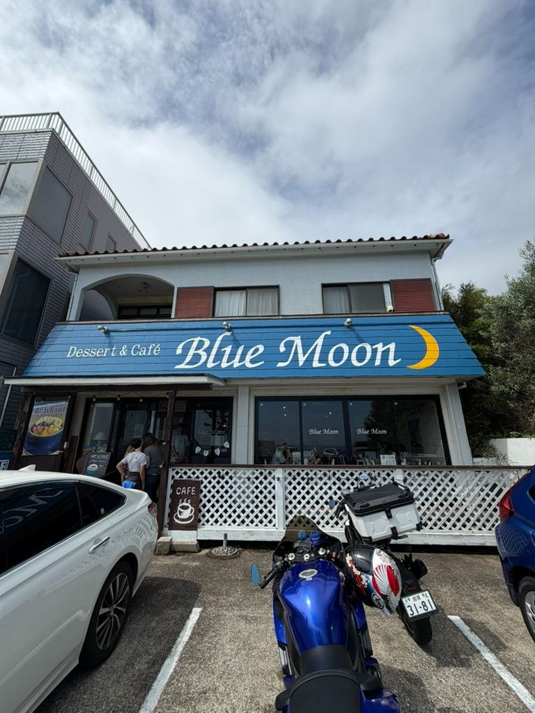
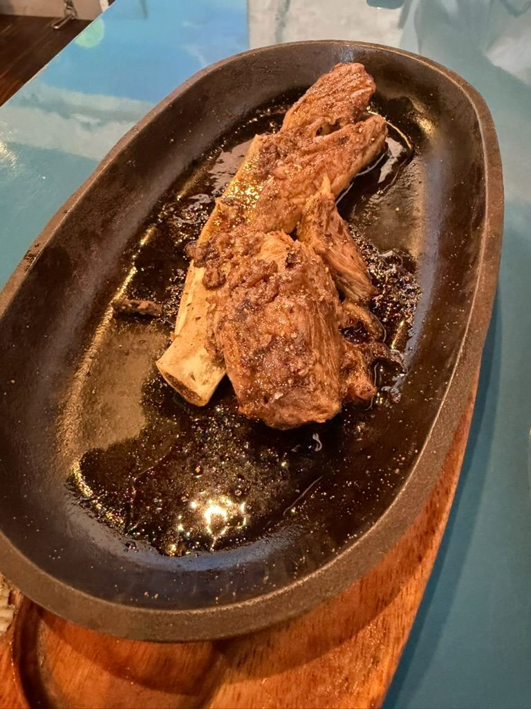
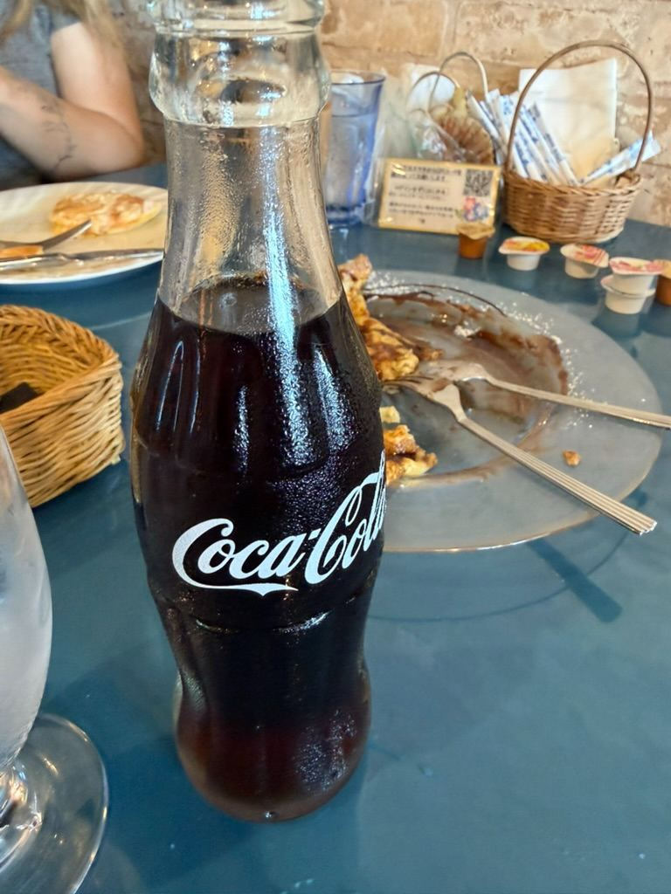

The Ultimate Beachfront Cafe & Dessert Spot in Yokosuka! 🌊🥞




Watch on YouTube →
Hey adventurers! If you’re ever exploring the beautiful coastal areas of Yokosuka and find yourself craving a sweet treat or a savory bite with a spectacular ocean view, we've found the perfect spot for you. We recently checked out an amazing beachfront gem, and it is an absolute must-visit!
Nestled right along the coast, **Dessert & Café Blue Moon** is a cozy and welcoming spot that perfectly captures those laid-back, beachy vibes. Whether you're pulling up in a car or cruising by on a motorcycle, the cafe's bright blue awning and charming exterior invite you right in to relax and unwind.
While the sign out front proudly advertises their sweets, you definitely do not want to skip the savory side of their menu. We started our visit with a sizzling, bone-in cut of meat served piping hot on a cast-iron skillet. It was incredibly tender, perfectly seasoned, and coated in a rich, savory glaze that had us scraping the pan for every last drop. It’s exactly the kind of hearty fuel you need after a long morning of windsurfing or strolling along the beach.
Then, it was time for the main event. Blue Moon takes their pancakes very seriously, and we were absolutely blown away by what came out of the kitchen. Imagine a fluffy, thick stack generously drizzled in a rich caramel syrup and topped with decadent, melting chunks of clotted cream. Every single bite was sweet, buttery perfection, making it the ultimate comfort food to enjoy while gazing out over the water.
To wash it all down, you can't go wrong with an ice-cold, classic glass bottle of Coca-Cola. There's just something nostalgic and deeply refreshing about it, especially when paired with such a rich dessert.
If you're in the Yokosuka area, do yourself a favor and stop by Dessert & Café Blue Moon. The coastal views are incredible, the atmosphere is perfectly chill, and the food will have you planning your next trip back before you even leave the table.
Stay tuned for more Emmerican Adventures!